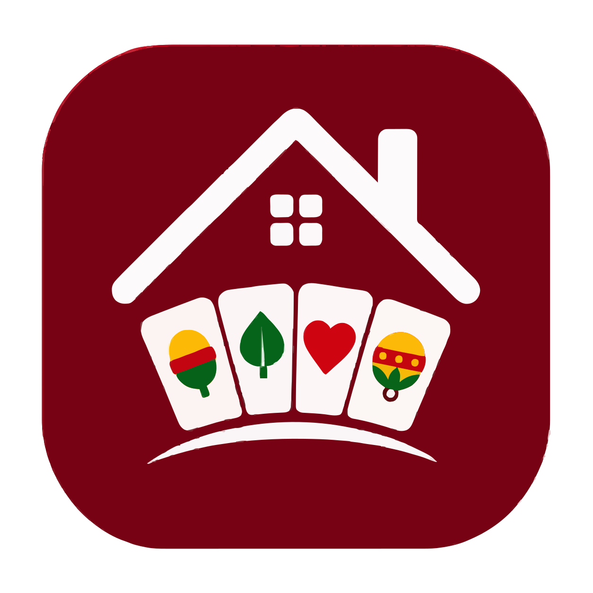

Bernd Dinkel, Hauptstr. 38, 96250 Ebensfeld, Deutschland. E-Mail: Bernd.Dinkel@gmx.de. Die Kartabend-App wird privat, ohne Werbung, für gemeinsame Kartabende im Bekanntenkreis betrieben. Diese Hinweise gelten für https://kolsbernd.github.io/Karten-App/. Stand: 27. November 2026 · Version 52.0.
Du kannst Kartabende organisieren, Punkte eintragen und Freunde verbinden. Andere registrierte Nutzer sehen deinen Benutzernamen, dein Profilbild und Spielstatistiken. Telefonnummern gehören nicht ins öffentliche Profil. Du musst keine Telefonnummer angeben und keine Handybenachrichtigungen erlauben, um mitzuspielen. Bei Fragen kannst du dich jederzeit an Bernd wenden.
Für das Konto sind Benutzername, Vorname, E-Mail-Adresse und ein Passwort erforderlich. Nachname, Ortschaft und Geschlecht sind bei der Registrierung optional. Für den eigenen Turnierzugang verlangt die App zusätzlich Nachname, Ortschaft und eine der Angaben Weiblich, Männlich oder Divers. Die normale Nutzung ohne Turniere bleibt ohne diese Ergänzungen möglich. Die E-Mail-Adresse dient der Kontobestätigung und Wiederherstellung des Zugangs. Passwörter werden beim Anmeldedienst als nicht rückrechenbare Prüfsummen gespeichert; sie sind für andere Nutzer nicht sichtbar. Profilbilder sind freiwillig. Benutzername und Profilbild werden im Nutzerverzeichnis, in Freundschaftsfunktionen und im Zusammenhang mit Spielständen angezeigt. Vorname, Nachname, E-Mail-Adresse und Rufnummer werden nicht im allgemeinen Nutzerverzeichnis veröffentlicht. Rechtsgrundlage für Konto und die ausdrücklich angeforderten Spielfunktionen ist Art. 6 Abs. 1 Buchst. b DSGVO; erforderliche Sicherheitsmaßnahmen beruhen auf Art. 6 Abs. 1 Buchst. f DSGVO. Die Datenschutzerklärung ist bereits vor dem Absenden der Registrierung erreichbar. Die Bestätigungsmail enthält Links zur Onlinefassung und zu einer versionierten PDF-Fassung. Die Bestätigung der E-Mail-Adresse ist keine pauschale Datenschutzeinwilligung und erteilt insbesondere keine Zuschauerfreigabe.
Bei einer neuen bestätigten Registrierung erhält ausschließlich das festgelegte Betreiberkonto Kolsbernd eine interne Mitteilung mit dem öffentlichen Benutzernamen und dem Zeitpunkt der Mitteilung, um neue Konten zu betreuen und missbräuchliche Registrierungen zu erkennen. E-Mail-Adresse und Telefonnummer werden nicht in die Nachricht aufgenommen. Wiederholte Anmeldungen lösen keine Nachricht aus. Bei aktivierten Push-Benachrichtigungen des Betreibers wird lediglich eine neutrale Meldung über ein neues Konto an dessen abonniertes Gerät gesendet. Die Mitteilung unterliegt der beschriebenen Löschfrist von 90 Tagen. Rechtsgrundlage ist Art. 6 Abs. 1 Buchst. f DSGVO (berechtigtes Interesse an Betreuung und Sicherheit des privat betriebenen Angebots); ein Widerspruch bleibt möglich.
Gespeichert werden Räume, Mitgliedschaften, Einladungen, Spielvarianten, Teams, Runden, Punkte, Ergebnisse, Zeitangaben und Änderungen an Spielständen. Raumteilnehmer können die gemeinsamen Spielstände sehen. Bestätigte Freunde können Räume ihrer Freunde mit begrenzten Angaben entdecken; der Beitritt erfordert weiterhin Einladung oder genehmigte Anfrage. Appweite Ranglisten zeigen registrierte Spieler mit Benutzernamen und aggregierten Spielergebnissen. Der Onlinestatus wird durch regelmäßige Anwesenheitsmeldungen festgestellt und kann zeitverzögert sein. Gastnamen und Gastbilder können durch Teilnehmer eingetragen werden; bitte informiere diese Personen darüber und trage nur vereinbarte Angaben ein. Die Verarbeitung dient der Organisation und Nachvollziehbarkeit der angeforderten Kartabende (Art. 6 Abs. 1 Buchst. b DSGVO), bei Gastangaben dem berechtigten Interesse an gemeinsamen Spielprotokollen (Art. 6 Abs. 1 Buchst. f DSGVO). Gegen diese Interessenabwägung kannst du Widerspruch einlegen. Normale Online-Räume werden nach mehr als vier Stunden ohne gespeicherten Spielstand, Raum-Präsenzmeldung oder direkten Raum-Chatbeitrag automatisch beendet und ins Archiv verschoben. Die Prüfung erfolgt alle fünf Minuten. Geplante Kartabendanfragen und Turniertische sind hiervon nicht betroffen. Raumdaten werden dabei nicht gelöscht; der Ersteller kann den Raum wieder öffnen. Dazu speichert der Server den letzten Aktivitätszeitpunkt. Präsenzmeldungen der App werden nur bei sichtbarer Raumansicht gesendet. Der Ersteller eines normalen Online-Raums kann freiwillig einen Zuschauer-QR-Code freigeben. Jeder mit dem zugehörigen Link kann ohne Anmeldung Spielstände und bisherige Partieverläufe lesen. Personenbezogene Namen, Profilbilder und Schreiberangaben erscheinen dort nur mit der eigenen freiwilligen Zuschauerfreigabe. Ohne Freigabe werden sie als Anonym und ohne Bild ausgegeben; Gäste ohne eigenes Konto erhalten keine Namensfreigabe. Freie Raum- und Teamtitel werden zur Vermeidung alter Namensnennungen nicht unverändert übernommen. Kontokennungen, E-Mail-Adressen, Telefonnummern, private Profilfelder und Chats werden nicht ausgegeben. Der Betreiber stellt die Freigabe bereit; der Ersteller muss vor dem Teilen die Teilnehmer informieren und eine tragfähige Rechtsgrundlage für die Weitergabe klären. Technisch verhindert ein nicht erratbarer, serverseitig geprüfter Code das Auflisten solcher Räume. Der Code ist eine weitergebbare Zugangsberechtigung, keine Identitätsprüfung. Er endet beim Schließen des Raums und kann vorher erneuert werden; nach Wiederöffnung entsteht ein neuer Code. Bereits gelesene Inhalte oder extern gespeicherte Kopien können dadurch nicht zurückgerufen werden. Die Zuschaueransicht fragt den Stand regelmäßig über HTTPS ab. Der getrennte Beitritts-QR nutzt eine sieben Tage gültige Einladung und verlangt ein eigenes Konto. Die Zuschauerfreigabe wird beim ersten Betreten des Raums oder Turniertischs mit Ja oder Nein abgefragt. Sie betrifft ausschließlich die zusätzliche Veröffentlichung von Namen/Bildern gegenüber externen Linkinhabern und ist keine pauschale Zustimmung zu allen App-Verarbeitungen. Ablehnung verhindert weder Zugang noch Mitspielen. Die erforderliche interne Konto-, Spiel- und Statistikverarbeitung wird davon getrennt nach den jeweils beschriebenen Zwecken und Rechtsgrundlagen beurteilt. Einwilligungen zur zusätzlichen Namens-/Bildanzeige stützen sich auf Art. 6 Abs. 1 Buchst. a und Art. 7 DSGVO. Die Auswahl lässt sich unter Raum-Einstellungen bzw. Tischstatistik ändern oder unter Einstellungen für sämtliche Räume und Tische widerrufen. Der Server berücksichtigt eine bestätigte Änderung bei den nächsten Zuschauerabrufen. Ein offline nicht gespeicherter Widerruf ist noch nicht beim Server angekommen; die App meldet dies. Bereits erhaltene Kopien können nicht zurückgerufen werden. Die Bezeichnung Anonym bedeutet lediglich eine Maskierung direkter Kennzeichen; Ergebnisse, Zusammensetzung und Zeitbezüge können in kleinen Gruppen weiter zuordenbar sein. Für eine solche verbleibende Verarbeitung ist eine tragfähige Rechtsgrundlage gesondert erforderlich. Ein Raumende deaktiviert die Freigabe; nach Wiederöffnung muss sie neu gewählt werden. Bei abgeschlossenen Schniffelkopf-Partien kann das Ergebnisfenster aus der Punktedifferenz und einem manuell gewählten Satz von 3, 5 oder 10 Cent einen unverbindlichen Euro-Ausgleich anzeigen. Bei geteiltem ersten Platz wird die Gesamtsumme centgenau aufgeteilt. Diese abgeleiteten Beträge und die Satzauswahl verbleiben ausschließlich in der geöffneten Anzeige auf dem Gerät; sie werden nicht als Forderung gespeichert oder an einen Zahlungsdienst übertragen. Die Spielpunkte und deren bisherige Verarbeitung bleiben unverändert. Schafkopf wird zusätzlich außerhalb von Turnieren erfasst. Für 21 rückwärts werden je Eintrag Farbe, Stichzahl, freiwilliges Aussetzen und Reststand gespeichert; die Vergleichsstatistik zählt den Fortschritt als 21 minus Endstand. Klopfer speichert bei neuen Einträgen eine Stichzahl und die Auswahl Richtig/Falsch. Eine bestätigte Rücknahme des letzten Abschlusseintrags öffnet die Partie wieder und korrigiert die zugehörigen Statistiken; die Änderung bleibt im geschützten Raumänderungsverlauf nachvollziehbar. Krawallo erfasst zwei feste Teams, Spielart, Ansage, Ergebnis, Anzahl der Verdopplungen, Teampunkte und Punktestand. Persönliche Statistiken enthalten eigene Teampunkte und Nettopunkte. Verfasser und Zeitangaben werden wie bei den übrigen Spielen protokolliert. Bei neuen Krawallo-Einträgen entfällt die Farbe; frühere Farbangaben bleiben in bestehenden Verläufen erhalten. Bei 21 rückwärts und Klopfer wird eine ausdrücklich bestätigte Abweichung von der erwarteten Stichsumme als Kontrollmerkmal am Ergebniseintrag gespeichert. Die übrigen Spielregeln und Datenempfänger bleiben unverändert.
Der Raum- beziehungsweise Turnierersteller kann einen separaten, ausschließlich lesenden TV-Zugang freigeben. Dieser nutzt die bereits beschriebenen Zuschauerfreigaben und deren Maskierung: Ohne passende freiwillige Zustimmung werden Namen und Bilder nicht veröffentlicht. Linkinhaber können die jeweils freigegebenen aktuellen Spielstände auf einem TV oder anderen Browser sehen. Gespeichert werden eine zufällige Sitzungskennung, die Konto-ID des Erstellers, die Raum- oder Tischzuordnung, kryptografische Prüfwerte des Links sowie Erstellungs-, Ablauf- und gegebenenfalls Sperrzeitpunkt. Der geheime Zugangswert wird in der Datenbank nicht im Klartext gespeichert und für die Übertragung nur im Arbeitsspeicher verarbeitet. Die TV-Seite benötigt kein Benutzerkonto und übernimmt keine App-Anmeldedaten. Die Datenübertragung erfolgt per HTTPS zur bestehenden Supabase-Datenbank. Ist Google Cast vom Betreiber eingerichtet und öffnet der Nutzer das Teilen-Menü, wird das Google Cast SDK von www.gstatic.com geladen. Dabei wird mindestens die IP-Adresse an Google übermittelt. Die Geräteauswahl und Übertragung verwenden den Google-Cast-Dienst und die Netzwerkberechtigungen des Browsers. Nach Auswahl eines Geräts erhält der Cast-Empfänger den zeitlich begrenzten Zuschauerzugang, nicht die App-Anmeldedaten. Der Empfänger lädt nur die bereits freigegebene Zuschauerprojektion. Für den Cast-Dienst gelten zusätzlich die Datenschutzhinweise von Google und des Geräteherstellers. Ohne eingerichtete Cast-App-ID werden diese externen Skripte nicht geladen. Der Ersteller kann den TV-Zugang unabhängig von anderen Zuschauer-QR-Codes beenden. Beim Beenden des Raums, einer erneuten Raumöffnung, einem neuen TV-Zugang oder einer neuen Turnierrunde wird der alte Zugang ungültig. Bereits gesehene oder extern gespeicherte Inhalte können nicht zurückgeholt werden. Auf TV-Geräten gelten zusätzlich die Datenschutzhinweise des jeweiligen Geräteherstellers. Die App steuert weder das Fernsehprogramm noch die TV-Firmware; die Kombination mehrerer Bildquellen wird am TV vorgenommen.
Bei normalen Kartabenden sind Geschlecht und Ortschaft freiwillig. Die App verlangt beide Angaben sowie den Nachnamen vor dem eigenen Turnierzugang. Geschlecht und Ortschaft bleiben privat und werden nicht für Auslosung, Wertung, Ranglisten, Benachrichtigungen oder öffentliche Tisch-QR-Codes verwendet. Zugriff haben nur du selbst und der Betreiber im Rahmen der Administration. Die Oberfläche weist vor der Ergänzung auf die Teilnahmebedingung hin. Angaben können im Profil entfernt werden; danach muss der Turnierzugang erneut ergänzt werden. Die Erforderlichkeit dieser Turnierbedingung ist gesondert zu prüfen; insbesondere für die Geschlechtsangabe wird damit keine rechtliche Notwendigkeit behauptet. Ein Widerrufs-, Auskunfts- oder Löschverlangen kann an den Betreiber gerichtet werden.
Die Turnierverwaltung kann registrierte Nutzer anhand ihres Benutzernamens und Profilbildes einem Tisch zuordnen. Zugewiesene Teilnehmer sehen das betreffende Turnier und ihre eigenen Tische; fremde Tisch-Spielverläufe bleiben verborgen. Alle Teilnehmer dieses Turniers und die Verwaltung sehen die Turnier-Gesamtrangliste einschließlich Spielernamen, Profilbildern und reduzierten Ergebnissen. Gespeichert werden Turniereinstellungen, Zuordnungen, Runden, Punkte, Zeitpunkte und das registrierte Konto, das eine Runde erfasst hat. Die Verarbeitung dient der gemeinsamen Turnierdurchführung und ihrer nachvollziehbaren Wertung (Art. 6 Abs. 1 Buchst. b DSGVO, bei eingetragenen Mitspielern ergänzend das berechtigte Interesse an der Durchführung des gemeinsamen Kartenspiels nach Buchst. f). Automatische Tischwechsel folgen den vorab eingestellten Spielregeln; private Profilangaben werden dabei nicht verwendet. Turnierergebnisse bleiben zur gemeinsamen Auswertung gespeichert. Ein datenschutzrechtliches Lösch- oder Berichtigungsverlangen kann an den Betreiber gerichtet werden; dabei werden auch Tischprotokolle und gemeinsame Spielergebnisse geprüft. Zur eindeutigen Teambezeichnung werden die Namen beider Mitspieler im Turniertisch angezeigt; auf engen Bildschirmen kann der Vorname auf seinen Anfangsbuchstaben verkürzt werden. Laufende Tische sind für die zugeteilten Konten zusätzlich in der Raumübersicht sichtbar. Der Ersteller kann nach Abschluss aller Tische die nächste Runde mit zufälligen Teams starten und das Turnier nach allen vorgesehenen Runden beenden oder vorher abbrechen. Beendete und abgebrochene Turniere liegen im Archiv; ihre Spiel- und Teamstatistiken einschließlich Teilnehmernamen und Profilbildern können alle angemeldeten Nutzer einsehen. Nicht beteiligte Nutzer erhalten nur reduzierte Ergebnisse ohne die einzelnen Eintrags- oder Bearbeiterprotokolle. Telefon, Geschlecht und private Ortschaft von Konten werden dabei nicht offengelegt. Die vollständigen Ansichten laufender oder vorbereiteter Turniere bleiben auf Ersteller und zugeteilte Teilnehmer begrenzt. Abbruch löscht die Ergebnisse nicht; eine unvollständige Partie zählt nicht in der abschließenden Rangliste. Bei regulärem Abschluss zeigt die App die Rangplätze und die Personen mit den wenigsten erspielten Punkten als Nüsskarter an. Der Ersteller kann für einen laufenden Tisch einen Zuschauer-QR-Code anzeigen. Wer diesen Code erhält, kann ohne Anmeldung den aktuellen Tisch-Spielstand, vollständige Vor- und Nachnamen der zugeordneten Spieler sowie den Verlauf der einzelnen Partien abrufen. Im Verlauf werden Verfasser-Anzeigename und erfasste Zeit zwischen den Einträgen angezeigt. Kontokennungen, Profilbilder, Telefonnummern, Wohnorte und Adressen werden über diesen Zugang nicht übertragen. Der Code ist eine Zugangsberechtigung zum Spielstand; bitte nur an gewünschte Zuschauer weitergeben. Er gilt nur für die aktuelle Turnierrunde und wird bei Rundenwechsel oder Turnierende ungültig. Der Code wird lokal als QR-Grafik erzeugt; kein QR-Drittanbieter erhält ihn. Der zur Prüfung verwendete geheime Server-Schlüssel bleibt im geschützten Server-Speicher. Der normale Host erhält beim Öffnen die Spielstandsseite, der Zugriffscode bleibt im URL-Fragment auf dem Gerät und wird für die Spielstandsabfrage über HTTPS an Supabase gesendet. Die Zuschaueransicht speichert keine App-Anmeldesitzung. Dies dient der vom Ersteller gewünschten Anzeige des Tisch-Spielstands (Art. 6 Abs. 1 Buchst. b DSGVO). Der Turnierersteller darf jeden Tisch seines Turniers öffnen und Ergebnisse eintragen. Teilnehmer behalten den Zugang nur zu ihren zugeteilten Tischen. Startnummern werden pro Turnier fortlaufend vergeben und bleiben bei Neuverlosung bestehen; gleichnamige Turniergäste werden darüber unterschieden. Namen und Verlauf über den QR-Code sind an die Personen mit diesem Zugang weitergegeben; der Ersteller muss die Mitspieler darüber informieren und den Link vertraulich verteilen. Zusätzlich kann der Turnierersteller einen getrennten QR-Code für die Spielstanderfassung ausgeben. Wer diesen geheimen Link erhält, kann nach Eingabe von Vorname, Nachname und Ortschaft ausschließlich an diesem Tisch Ergebnisse eintragen und den letzten Eintrag zurücknehmen. Diese Angaben sind selbst eingegeben und werden nicht als amtlich geprüfte Identität behandelt. Der Zugang erlaubt keinen Partieabbruch und keinen Zugriff auf andere Tische oder die Turnierverwaltung. Er endet bei Tischabschluss, beim Rundenwechsel oder Turnierende, bei Ersetzen des Codes und spätestens nach 24 Stunden. Links und temporäre Sitzungen werden auf dem Server nur als kryptografische Hashwerte gespeichert. Die Zugangssitzung liegt im Sitzungsspeicher des Browsers; der Erfassungslink wird nach erfolgreicher Freigabe aus der Adresszeile entfernt. Temporäre Sitzungsdatensätze werden nach Ablauf von 24 Stunden beim nächsten täglichen Bereinigungslauf gelöscht. Die Angaben beim Ergebnis bleiben als Teil des gemeinsamen Spielverlaufs gespeichert. Zweck ist die vom Turnierersteller freigegebene, nachvollziehbare Spielstanderfassung; hierfür wird Art. 6 Abs. 1 Buchst. f DSGVO herangezogen. Gib den Erfassungs-QR nur an die dafür vorgesehene Person weiter. Auch der öffentliche Turniertisch-QR zeigt Namen nur nach der eigenen Freigabe für den betreffenden Tisch. Ohne Freigabe und bei Gästen ohne Konto erscheint Anonym. Die interne, zugangsbeschränkte Turnierverwaltung bleibt davon getrennt. In der geschützten Spielerauswahl der Turnierverwaltung sehen freigeschaltete Turnierersteller zusätzlich die bereits gespeicherte Ortschaft unter dem Spielernamen. Dies macht die Ortschaft nicht für andere Spieler oder externe QR-Zuschauer öffentlich. Bei Schafkopf-Turnieren werden Sitzplatz, gewählte Spielart, Ergebnis, die gewählten Gewinner des Sauspiels sowie positive Einzelpunkte und der Verlauf je Partie gespeichert. Für Zuschauer gelten dieselben personenbezogenen Freigaben wie bei anderen Turniertischen. Wird ein Tout vor dem Speichern ausdrücklich bestätigt und erfolgreich eingetragen, erhält ausschließlich der Turnierersteller eine interne Mitteilung mit Name des Spielers, Tischnummer und gespielter Spielart. Der Server erstellt diese Angaben aus dem gespeicherten Ergebnis. Bei Rücknahme wird die zugehörige Tout-Mitteilung entfernt; ansonsten gelten die allgemeinen Mitteilungsfristen von 90 Tagen. Die Mitteilung kann gelesen und ausgeblendet werden. Hierfür wird keine neue Handy-Push-Kategorie aktiviert. Die Ortschaft bleibt auch in der neuen Tischübersicht nur für den Turnierersteller sichtbar. In den zugangsbeschränkten Turnieransichten wird der Klarname statt des Anmeldenamens angezeigt; bei wenig Platz wird der Vorname abgekürzt. Aktiviert der Ersteller vor Turnierstart Farben erfassen, wird zusätzlich die gewählte Kartenfarbe Eichel, Gras, Herz oder Schellen je Ergebnis gespeichert und für Tisch- und Turnierstatistiken ausgewertet. Diese Spielinformation folgt denselben Zugriffs- und Freigaberegeln wie der zugehörige Partieverlauf; ein bereits freigegebener Zuschauerlink zeigt auch die erfasste Farbe. Es werden dafür keine neuen Standortdaten erhoben und keine neuen Drittanbieter eingebunden. Turniererstellungsrechte werden ausdrücklich für bestehende Konten freigeschaltet und anhand ihrer internen Konto-ID geprüft. Freigeschaltete Ersteller können im Spielerverzeichnis Klarnamen, Profilbilder und Ortschaften zur Turnierzuordnung sehen und eigene Gäste verwalten. Sie erhalten dadurch keine globale App-Verwaltung und keinen Zugriff auf fremde aktive Turniere ohne Zuteilung. Gastverzeichnisse sind nach Ersteller getrennt. Die Berechtigung bleibt bei einem App-Datenreset zusammen mit dem registrierten Konto bestehen. Der jeweilige Ersteller kann ein beendetes oder abgebrochenes Turnier nach Bestätigung endgültig löschen. Dabei werden Tische, Verläufe und zugehörige Zugänge entfernt. Zur Erhaltung persönlicher Gesamtstatistiken bleiben für registrierte Teilnehmer nur Konto-ID, interne Herkunftskennung, Spielart, Zeitpunkt, Siegstatus, erzielte Punkte, gegebenenfalls Nettopunkte und Anzahl der Einträge gespeichert; keine Gastnamen, Profilbilder oder Schreiberangaben werden in diesen Ergebnisnachweis übernommen. Nettopunkte sind ausschließlich bei Teamspielen die Differenz zwischen eigenen Punkten und Gegnerpunkten. Ein persönlicher Statistik-Neustart begrenzt die Auswertung auf spätere Ergebnisse; der globale App- oder Statistikreset entfernt die gespeicherten Ergebnisnachweise. Bestätigte, nicht blockierte Freunde können über das Profilbild im Freundemenü aggregierte persönliche Spielstatistiken abrufen: Spielart, Partien, Siege, Punkte, Nettopunkte und Gesamtsummen. Kontaktangaben, private Profilangaben sowie Raum- oder Chatdetails werden hierfür nicht freigegeben. Die allgemeine Rangliste zählt registrierte Turnierergebnisse auch vor der Archivlöschung, damit eine Löschung die Gesamtwertung nicht verändert. Turnierersteller können freiwillig ein Turnierlogo hinterlegen. Das Bild wird im Browser verkleinert und als PNG ohne ursprüngliche Bildmetadaten gespeichert; es ist im gleichen Nutzerkreis wie das jeweilige Turnier sichtbar. Bitte nur Bilder mit entsprechenden Nutzungsrechten wählen. Das hinterlegte Turnierlogo wird auch in den bereits zugriffsgeschützten Tisch- und Gast-Erfassungsansichten angezeigt; deren Zugriffsrechte werden dadurch nicht erweitert. Die letzten Ergebnisse eines fertig gespielten Tisches können nur während derselben noch laufenden Turnierrunde nach Bestätigung zurückgenommen werden. Nach dem Wechsel der Turnierrunde oder Archivierung ist dieser Weg gesperrt.
Wenn du eine Rufnummer hinterlegst und die gesonderte Erlaubnis erteilst, darf Bernd Dinkel sie ausschließlich für persönliche telefonische Rückfragen zu Kartabenden verwenden. Die Rufnummer ist nicht Voraussetzung für die App, wird nicht für Werbung oder SMS-Versand verwendet und ist nicht für Push nötig. Rechtsgrundlage ist deine freiwillige Einwilligung nach Art. 6 Abs. 1 Buchst. a DSGVO. Du kannst sie jederzeit mit Wirkung für die Zukunft widerrufen, indem du die Nummer im Profil entfernst oder Bernd kontaktierst. Die Rufnummer wird in der Datenbank verschlüsselt gespeichert und nur über berechtigte Zugriffe entschlüsselt. Der Server kann sie für diese berechtigten Zwecke lesen. Eine frühere allgemeine Erlaubnis für Benachrichtigungen wird nicht automatisch als Erlaubnis für persönliche Rückfragen behandelt.
Push wird nur nach Aktivierung und Gerätefreigabe verwendet. Benachrichtigungen informieren neutral über neue Freundschaftsanfragen oder einen neuen Kartabend eines bestätigten Freundes; Namen und Raumnamen stehen nicht im Push-Text. Gespeichert werden die Geräteanmeldung mit Zustelladresse und kryptografischen Schlüsseln, Auswahl der Benachrichtigungsarten sowie Zustellstatus. Die Zustellung erfolgt über den Push-Dienst deines Browsers bzw. Betriebssystems, etwa Apple, Google, Mozilla oder Microsoft. Dabei fallen technische Verbindungsdaten an. Die Push-Nutzlast wird für die Zustellung verschlüsselt. Du kannst Push in der App oder in den Geräteeinstellungen abschalten; die Verarbeitung neuer Zustellungen für dieses Gerät endet nach Abmeldung der Geräteanmeldung. Rechtsgrundlage: Art. 6 Abs. 1 Buchst. a DSGVO. Bereits angezeigte Meldungen lassen sich auf dem Gerät selbst entfernen. Beim Erstellen einer Kartabendanfrage erhalten bestätigte, nicht blockierte Freunde eine Mitteilung. Für eine Handy-Pushmeldung gilt die vorhandene Einstellung für neue Kartabende; der Sperrbildschirmtext bleibt neutral. Eine spätere Blockierung verhindert die noch ausstehende Zustellung und die Anzeige des Anfragehinweises. Für neue Kartabendanfragen von Freunden besteht jetzt eine eigene Geräteauswahl, unabhängig von neuen Online-Räumen. Bei bestehenden Geräten wird die bisherige gemeinsame Auswahl übernommen und kann danach getrennt geändert werden. Mitteilungen in der App bleiben hiervon unberührt.
Das Angebot richtet sich ausschließlich an volljährige Personen ab 18 Jahren. Die App führt keine amtliche Altersprüfung durch; der Hinweis allein gewährleistet daher keine verifizierte Volljährigkeit. Sollten Daten einer minderjährigen Person bekannt werden, wende dich zur Klärung an den Verantwortlichen. Die Telefonnummer bleibt auch für Erwachsene freiwillig und wird nur nach gesonderter Erlaubnis für persönliche Rückfragen zu Kartabenden durch den Betreiber verwendet. Die Altersgrenze ersetzt keine datenschutzrechtliche Erlaubnis.
Die Turnierverwaltung kann Gäste ohne Benutzerkonto mit Vorname, Nachname und Ort anlegen. Die Angaben dienen der eindeutigen Zuordnung bei Auslosung und gemeinsamer Spielauswertung. Bitte informiere eingetragene Gäste vorab über diese Verarbeitung und erhebe nur erforderliche Angaben. Namen und Ergebnisse erscheinen bei laufenden Turnieren für die Verwaltung und die Teilnehmer, nach Archivierung auch für andere angemeldete Nutzer; der Ort ist nicht Bestandteil der veröffentlichten Rangliste. Rechtsgrundlage ist das berechtigte Interesse an der nachvollziehbaren Durchführung des gemeinsamen Kartenspiels (Art. 6 Abs. 1 Buchst. f DSGVO); Rechte und Widerspruchsmöglichkeiten bleiben bestehen. Gastnamen können nach dem Anlegen nicht umbenannt werden. Ein unbenutzter Gast kann nach Bestätigung gelöscht werden. Wurde er bereits in einem Turnier verwendet, wird er aus der Auswahl entfernt, während die Zuordnung zu bereits gespielten Ergebnissen erhalten bleibt. In vorbereiteten Tischen wird sein Platz wieder frei und muss vor dem Start neu besetzt werden. Ein einem laufenden Turnier zugeordneter Gast kann erst danach entfernt werden. Ein datenschutzrechtliches Berichtigungs- oder Löschverlangen kann unabhängig davon an den Betreiber gerichtet werden. Vor dem Start kann der Ersteller einen Gastplatz per persönlichem Einladungslink einem registrierten Nutzer übergeben. Die Bestätigung ordnet dessen Konto dem Platz zu; die ursprüngliche Gastverwaltung bleibt bis zur Entfernung des Gastes bestehen. Der Link enthält einen zufälligen Einmalcode; serverseitig wird nur dessen Hash mit Ablauf nach sieben Tagen gespeichert. Bereits verwendete oder widerrufene Links können nicht von einem anderen Konto genutzt werden. Ergebnisse erfassen können nur die zugeteilten registrierten Mitspieler. Der Turnierersteller darf jeden Tisch seines Turniers zur Punkteerfassung öffnen.
Bei einer Kartabendanfrage werden Name, Datum, Uhrzeit, Zeitzone, Ort, gewünschte Spielvarianten und Zusagen gespeichert. Standardmäßig sind diese Angaben einschließlich der Benutzernamen und Profilbilder zugesagter Spieler für angemeldete Nutzer sichtbar. Unter Einstellungen kann der Ersteller die Sichtbarkeit seiner Anfragen auf bestätigte Freunde begrenzen. Bereits zugesagte Teilnehmer behalten Zugang. Nur angemeldete Nutzer können Teilnahme anfragen; der Ersteller entscheidet über Annahme oder Ablehnung. Der Ersteller zählt als Teilnehmer. Reine Schleifer-Anfragen benötigen sechs Zusagen, andere vier. Der Ersteller kann eine noch nicht gestartete Anfrage nach Bestätigung absagen; dabei werden auch Zusagen und Chat gelöscht. Eine noch nicht in einen Online-Raum umgewandelte Anfrage bleibt bis vier Stunden nach dem geplanten Beginn erhalten. Danach wird sie beim nächsten serverseitigen Ablauf archiviert, ohne Zusagen oder Chat zu löschen. Die Anfrage bleibt im Archiv für den Ersteller und bestätigte Teilnehmer einsehbar, soweit sie nach den bestehenden Sichtbarkeits- und Blockierungsregeln berechtigt sind. Archivierte Anfrage-Chats bleiben lesbar, neue Beiträge und Reaktionen sind gesperrt. Die Daten bleiben bis zu einer vorgesehenen Löschung oder einem berechtigten Löschverlangen erhalten. Bei vollständiger Gruppe wird ein normaler gemeinsamer Spielraum eingerichtet. Für Sperren werden die beteiligten Kontokennungen und der Zeitpunkt gespeichert; eine Blockierung kann unter Freunde entfernt werden. Die Verarbeitung dient der gewünschten Organisation und Abgrenzung der Kartabende (Art. 6 Abs. 1 Buchst. b DSGVO), Missbrauchsschutz ergänzend Art. 6 Abs. 1 Buchst. f DSGVO. Bestandene Kartabende und ihr Chat bleiben bis zur endgültigen Raumlöschung bzw. Bearbeitung eines berechtigten Löschverlangens erhalten. Bei ausdrücklicher Absage erhalten bereits zugesagte andere Teilnehmer eine eigene Mitteilung mit Kartabendtitel, geplantem Beginn und Absagegrund. Bei aktivierter Benachrichtigung für neue Kartabende kann eine neutrale Push-Absage hinzukommen. Die Mitteilung bleibt unabhängig vom gelöschten Kartabend bis zur regulären Löschfrist von 90 Tagen gespeichert. Selbst blockierte Ersteller und zugesagte Teilnehmer werden in ansonsten sichtbaren Kartabendanfragen mit einem Hinweis gekennzeichnet. Wer vom Ersteller blockiert wurde, erhält weiterhin keinen Zugang zu dessen Anfragen. Eine eigene Blockierung erlaubt keine direkte Teilnahmeanfrage an den blockierten Ersteller; dafür muss sie zuerst aufgehoben werden. Die Einschränkung auf bestätigte Freunde bleibt unabhängig davon bestehen. Der Ersteller kann zusätzliche Zusagen über die spielabhängige Mindestzahl hinaus bis zu insgesamt 32 Personen erlauben. Die zusätzlichen Personen erhalten nach Bestätigung dieselben Teilnehmerrechte. Er kann seine Anfrage bis zur Archivierung in einen normalen Online-Raum umwandeln; bestätigte Teilnehmer behalten Zugang, offene Anfragen werden geschlossen. Die bestehende Chat-Zuordnung bleibt für die bestätigten Teilnehmer erhalten. Die Archivierung selbst löst keine neue Push-Absage aus. Die Einstellung zur Beschränkung auf Freunde bleibt bestehen; diese Version erweitert die Sichtbarkeit vorhandener privater Anfragen nicht.
Nur zugesagte Teilnehmer erhalten Zugriff auf den Chat eines Kartabends. Nachrichten mit höchstens 160 Unicode-Zeichen werden auf dem sendenden Gerät verschlüsselt und erst auf berechtigten Empfängergeräten entschlüsselt. Der Server speichert die Nachrichteninhalte ausschließlich als verschlüsselte Pakete und erhält nicht die privaten Geräteschlüssel. Kontokennungen, Chatzuordnung, Nachrichtenlänge, Zeitpunkte und öffentliche Geräteschlüssel bleiben als notwendige technische Metadaten serverseitig verarbeitbar. Es gibt keine Klartext-Sicherheitskopie des Chats auf dem Server. Die privaten, nicht exportierbaren Geräteschlüssel werden im lokalen Browserspeicher des jeweiligen Kontos auf diesem Gerät aufbewahrt, auch bei Abmeldung. Beim Löschen der Website-Daten gehen sie verloren. Ein neues Gerät erhält zukünftige Nachrichten wie bisher über die nach Anmeldung registrierten Geräteschlüssel. Für frühere Nachrichten kann ein vorhandenes Gerät den dort lesbaren Verlauf gezielt für ein anderes Gerät desselben Kontos neu verschlüsseln. Private Geräteschlüssel werden dabei nicht exportiert. Das bisherige Gerät prüft die ursprünglichen Nachrichten und erzeugt signierte neue verschlüsselte Pakete. Diese Übertragung bestätigt das eigene Quellgerät; sie ist keine neue Signatur des ursprünglichen Verfassers. Die Pakete sind an Nachricht bzw. Reaktion, ursprünglichen Absender, Zeitpunkt, Chat und Empfängergerät gebunden. Auf dem neuen Gerät müssen zuvor die angezeigten Geräte-/Übertragungscodes mit dem bisherigen Gerät verglichen und das Quellgerät bestätigt werden. Der Server speichert zusätzliche verschlüsselte Pakete und die erforderlichen Geräte-/Nachrichten-Zuordnungen; er erhält keine Nachrichtenklartexte oder privaten Geräteschlüssel. Die Verarbeitung erfolgt auf ausdrückliche Anforderung des Kontoinhabers zur Geräteübernahme. Nur Inhalte, die ein vorhandenes Gerät tatsächlich lesen kann, lassen sich übertragen. Ohne solches Gerät oder nach Verlust aller lesbaren Geräteschlüssel kann die App alte Nachrichten nicht wiederherstellen. Die Bestätigung eines Quellgeräts wird lokal auf dem Zielgerät gespeichert. Teilnehmer müssen die aktualisierte App mindestens einmal öffnen, damit öffentliche Geräteschlüssel für die Zustellung bereitstehen. Die Oberfläche zeigt Gerätefingerabdrücke zur persönlichen Prüfung. Wie bei einer Web-App setzt die Verschlüsselung vertrauenswürdige Endgeräte und unveränderten App-Code voraus. Sie verhindert nicht, dass ein Empfänger gelesene Inhalte weitergibt. Der Chat und seine notwendigen technischen Speicherzugriffe dienen der ausdrücklich angeforderten Kommunikation (Art. 6 Abs. 1 Buchst. b DSGVO, § 25 Abs. 2 Nr. 2 TDDDG), notwendiger Missbrauchsschutz ergänzend Art. 6 Abs. 1 Buchst. f DSGVO. Beim automatischen Verfall einer unvollständigen Anfrage sowie bei endgültiger Löschung des zugehörigen Raums werden die gespeicherten Chatpakete mit entfernt. Öffentliche Geräteschlüssel gehören zum Konto; private Geräteschlüssel können durch Löschen der Website-Daten entfernt werden. Emoji-Reaktionen werden ebenfalls Ende-zu-Ende verschlüsselt; sichtbar bleiben serverseitig die Zuordnung zur Nachricht und zum reagierenden Konto sowie Zeitpunkte und Paketlänge. Nur der Verfasser kann die eigene Nachricht nach Bestätigung für alle entfernen. Dabei werden ihr verschlüsselter Inhalt und zugehörige Reaktionen gelöscht; ein Löschhinweis mit Absender und Zeitpunkt bleibt im Chat bis zur Löschung des Kartabends erhalten. Fremde Nachrichten können nicht gelöscht oder ausgeblendet werden. Die gleiche Ende-zu-Ende-Verschlüsselung gilt für Chats normaler Online-Räume. Nur bestätigte Raummitglieder mit Benutzerkonto können deren Chat nutzen; reine Namensgäste haben keinen Zugang. Neue Mitglieder bzw. neue Geräte erhalten keinen rückwirkenden Zugriff auf frühere verschlüsselte Nachrichten. Der Server verarbeitet weiterhin notwendige Metadaten wie Absender, Zeitpunkt, Raumzuordnung und Geräteschlüssel. Ein beendeter Raumchat bleibt für Mitglieder lesbar, bis der Raum gelöscht wird. Übertragene Nachrichtenpakete werden zusammen mit einer gelöschten Nachricht, Reaktion oder dem zugehörigen Chat entfernt. Bereits gelesene Inhalte oder Kopien auf Endgeräten lassen sich dadurch nicht zurückholen. Eine angemeldete Person kann nur Daten von Chats abrufen, zu denen sie aktuell berechtigt ist. Ältere Nachrichten werden in Seiten von bis zu 100 Einträgen geladen; dabei werden Inhalte nur während der Anzeige bzw. Übertragung im Arbeitsspeicher entschlüsselt und nicht von der App als Klartext-Verlauf dauerhaft abgelegt. Die Oberfläche für die Gerätefreigabe ist vorübergehend ausgeblendet; bereits freigegebene Nachrichten bleiben lesbar. Die Chatansicht zeigt derzeit die neuesten bis zu 100 Nachrichten ohne manuelle Seitenauswahl.
Beim Planen eines Kartabends kann der Ersteller freiwillig eine Adresse mit Kartenpunkt ergänzen. Diese Angaben sind für die Nutzer sichtbar, die seine Anfrage sehen dürfen, und dienen dem vereinbarten Treffpunkt (Art. 6 Abs. 1 Buchst. b DSGVO). Bitte gib nur einen Treffpunkt an, den du mit diesem Teilnehmerkreis teilen darfst. Adresse und Kartenpunkt werden mit der Anfrage gespeichert und nach deren geltenden Löschregeln entfernt. Für die freiwillige Adresssuche wird erst nach Antippen der Suchtext an Photon unter photon.komoot.io übertragen. Der Dienst nutzt OpenStreetMap-Daten und wird von komoot bereitgestellt; dabei erhält der Dienst insbesondere die IP-Adresse und technisch notwendige Verbindungsdaten. Anbieterinformation: komoot GmbH, Kienberger Allee 4, 12529 Schönefeld; Datenschutzhinweise: https://www.komoot.com/privacy. Die Kartenvorschau lädt erst nach Antippen Inhalte von OpenStreetMap. Dabei werden der Kartenpunkt des Treffpunkts, IP-Adresse und Verbindungsdaten an OpenStreetMap-Dienste übertragen. Anbieter ist die OpenStreetMap Foundation; nähere Angaben zu Verarbeitung, Infrastruktur und Speicherfristen: https://osmfoundation.org/wiki/Privacy_Policy. Eine Verarbeitung über internationale Infrastruktur ist möglich; die App sagt keine ausschließliche Verarbeitung dieser externen Abrufe innerhalb Deutschlands oder der EU zu. Das freiwillige Laden von Suche und Karte erfolgt nach dem jeweiligen Hinweis und deiner Betätigung (Art. 6 Abs. 1 Buchst. a DSGVO). Ohne Laden kannst du die App und die Texteingabe weiter verwenden. Die App enthält keine Umkreissuche und fordert dafür keinen Handy-Standort an.
Die App-Dateien werden über GitHub Pages bereitgestellt. GitHub verarbeitet dabei insbesondere IP-Adressen und technische Aufrufdaten zur Auslieferung und Sicherheit. Anbieterinformationen: GitHub, Inc. bzw. GitHub B.V.; https://docs.github.com/en/site-policy/privacy-policies/github-general-privacy-statement. Konto, Datenbank, Anwesenheit und Serverfunktionen werden mit Supabase bereitgestellt (Supabase Pte. Ltd.). Die Projektdatenbank liegt in der EU-Region Paris. Dies bedeutet nicht, dass sämtliche Support-, Infrastruktur- oder Unterauftragnehmerverarbeitungen ausschließlich dort stattfinden. Informationen: https://supabase.com/privacy und https://supabase.com/legal/customer-resources/data-processing-addendum. Kontobestätigungs- und Wiederherstellungs-E-Mails werden über den eingerichteten GMX-SMTP-Dienst versandt (1&1 Mail & Media GmbH; https://agb-server.gmx.net/datenschutz). Dabei werden E-Mail-Adresse und Nachrichteninhalt an den Versanddienst und den Empfangsanbieter übermittelt. Die App setzt keine Werbe- oder Analysedienste ein. Die Anmeldebibliothek wird mit den App-Dateien ausgeliefert.
Zugriff erhalten der Betreiber, die technisch notwendigen Dienstleister sowie andere Nutzer im oben beschriebenen Umfang. Bei Infrastruktur-, Support- und Push-Verarbeitung können Daten außerhalb des Europäischen Wirtschaftsraums verarbeitet werden. Die jeweiligen Anbieter erläutern eingesetzte Angemessenheitsbeschlüsse, Standardvertragsklauseln und weitere Garantien in ihren Datenschutz- und Vertragsunterlagen. Du kannst Angaben zu den für deinen Fall einschlägigen Empfängern und Garantien beim Verantwortlichen anfordern. Eine EU-Datenbankregion allein ist keine Zusicherung, dass jeder Datenfluss innerhalb der EU bleibt.
Die App verwendet den Sitzungsspeicher und lokalen Speicher für Anmeldung, Anzeigeeinstellungen und Einladungsabläufe sowie einen Service Worker zum Zwischenspeichern der App-Dateien. Aus früherer Nutzung können lokal gespeicherte Spielstände vorhanden sein. Diese Einträge lassen sich über die Website-Daten im Browser entfernen; dabei geht die lokale Anmeldung verloren. Für ausdrücklich angeforderte und technisch notwendige Speicherung gilt § 25 Abs. 2 Nr. 2 TDDDG, ergänzend Art. 6 Abs. 1 Buchst. b bzw. f DSGVO. Push benötigt eine gesonderte Freigabe. Die Web-App kommuniziert über HTTPS. Spielstände sind serverseitig lesbar; die App bietet keine Ende-zu-Ende-Verschlüsselung aller Inhalte. Schütze dein Gerät und gib Einladungslinks nur an gewünschte Teilnehmer weiter. Für die Behebung von App-Fehlern werden ausschließlich fest vorgegebene Fehlercodes, grobe Bereiche (Bedienung, globale Laufzeit oder Ressourcen), App-Version, Anzahl sowie erstes und letztes Auftreten verarbeitet. Vollständige Fehlermeldungen, Stapelverläufe, URLs, Chattexte, Passwörter, Kontakt- und Raumangaben werden nicht übernommen. Vor der Anmeldung oder offline werden höchstens 20 bereinigte Gruppen bis zu sieben Tage lokal zwischengespeichert; nach Anmeldung erfolgt die Übertragung an die bestehende Supabase-Datenbank. Eine zufällige Übertragungskennung verhindert doppelte Zählung und wird spätestens nach neun Tagen beim täglichen Lauf entfernt. Die Fehlerübersicht ist ausschließlich für den Betreiber abrufbar. Der Diagnose-Datensatz enthält keine Benutzerkennung. Zur Begrenzung missbräuchlicher Übertragungen wird separat die Konto-ID mit dem aktuellen Minutenfenster und einem Zähler verarbeitet; veraltete Begrenzungsdaten werden nach einem Tag beim täglichen Lauf entfernt. Rechtsgrundlage ist Art. 6 Abs. 1 lit. f DSGVO: berechtigtes Interesse an Betriebssicherheit und Fehlerbehebung; auf Geräteebene dient die begrenzte Zwischenspeicherung der technischen Bereitstellung des angeforderten Dienstes. Es wird kein zusätzlicher Anbieter eingebunden und kein Nutzungsprofil erstellt.
Kontodaten bleiben während der Nutzung gespeichert und werden bei einem berechtigten Löschverlangen entfernt, soweit keine vorrangigen Aufbewahrungsgründe bestehen. Spielprotokolle bleiben bis zum Zurücksetzen oder Löschen des betreffenden Raums bzw. bis zur Bearbeitung eines einschlägigen Löschverlangens erhalten. Beenden archiviert einen Raum und löscht ihn nicht. Bei personenbezogenen Löschverlangen werden auch gemeinsame Spielprotokolle und Änderungsverläufe geprüft; Rechte anderer Teilnehmer können die Form der Löschung oder Anonymisierung beeinflussen. Mitteilungen werden nach 90 Tagen automatisch gelöscht, abgeschlossene technische Push-Versandaufträge nach 30 Tagen. Die Bereinigung erfolgt täglich. Offene Anfragen und Freundschaften bleiben davon unabhängig erhalten. Geräteanmeldungen werden bei Abmeldung oder festgestellter dauerhafter Ungültigkeit entfernt. Für Anbieterprotokolle und Sicherungen gelten zusätzlich die jeweiligen technischen Aufbewahrungszyklen; Daten in Sicherungen werden nach deren Ablauf überschrieben. Bei einem konkreten Löschverlangen informiert der Betreiber über etwaige verbleibende Einschränkungen. Bei künftiger endgültiger Raumlöschung bleiben reduzierte persönliche Spielergebnisse registrierter Konten für deren Gesamtstatistik erhalten: Spielart, Ergebnis, Punkte, Zeitpunkt und eine technische Herkunftskennung. Gastdaten, Raumnamen, Bilder und vollständige Spielverläufe werden dabei nicht übernommen. Die persönliche Statistik kann nach Sicherheitsabfrage ab einem neuen Zeitpunkt gezählt werden; gemeinsame Raumstände werden dadurch nicht gelöscht. Ein datenschutzrechtliches Löschverlangen bleibt unabhängig davon möglich. Das fest freigegebene Betreiberkonto kann nach zwei getrennten Sicherheitsabfragen sämtliche Spielstatistiken zurücksetzen oder die App-Daten insgesamt löschen. Beim Statistik-Reset entfallen auch Spielstände, Rundenverläufe und bisherige Wiederherstellungsstände; Räume, Teilnehmer und Chats bleiben erhalten, Turniere gehen in die Vorbereitung zurück. Beim vollständigen Reset werden Räume, Gäste, Chats, Kartabendanfragen, Turniere, Mitteilungen und Statistiken gelöscht. Registrierte Konten, Profile und Freundschaften sowie deren Sicherheitseinstellungen bleiben erhalten. Eine kurzlebige, kontogebundene Bestätigung schützt den Vorgang; sie ist nur einmal verwendbar und läuft nach zwei Minuten ab. Für den Nachweis der Freigabeentscheidung speichert die App intern Konto-ID, Raum-/Tischbezug, Ja/Nein, serverseitigen Zeitpunkt, Textversion und den angezeigten Hinweistext. Es wird dafür kein zusätzlicher IP- oder Gerätefingerabdruck erhoben. Der aktuelle Zustand und die Entscheidungsereignisse werden bei endgültiger Löschung des jeweiligen Raums/Tisches entfernt; bis dahin bleiben auch frühere Entscheidungen und Widerrufe nachvollziehbar. Ob darüber hinaus eine beschränkte Nachweisaufbewahrung erforderlich ist, muss der Betreiber für seinen konkreten Betrieb prüfen. Die Protokolle erscheinen nicht im Zuschauerzugang. Bereinigte Fehlerzusammenfassungen werden für die letzten 30 Kalendertage vorgehalten. Ältere Tagesgruppen werden täglich automatisch gelöscht. TV-Freigaben laufen spätestens nach 24 Stunden ab. Abgelaufene oder gesperrte TV-Sitzungsdatensätze werden nach einem zusätzlichen Tag beim täglichen Bereinigungslauf entfernt; eine Raum- oder Tischlöschung entfernt zugeordnete TV-Sitzungen unmittelbar.
Du hast nach Maßgabe der gesetzlichen Voraussetzungen Rechte auf Auskunft, Berichtigung, Löschung, Einschränkung und Datenübertragbarkeit (Art. 15 bis 20 DSGVO). Gegen Verarbeitungen aufgrund berechtigter Interessen kannst du aus Gründen deiner besonderen Situation Widerspruch einlegen (Art. 21 DSGVO). Eine Einwilligung kannst du jederzeit für die Zukunft widerrufen; die vorherige Rechtmäßigkeit bleibt unberührt. Wende dich dazu an Bernd.Dinkel@gmx.de. Du kannst dich bei einer Datenschutzaufsichtsbehörde beschweren, insbesondere beim Bayerischen Landesamt für Datenschutzaufsicht, Promenade 18, 91522 Ansbach, https://www.lda.bayern.de/. Es erfolgen keine Entscheidungen mit rechtlicher oder ähnlich erheblicher Wirkung ausschließlich durch automatisierte Verarbeitung. Spielranglisten dienen der Darstellung von Spielergebnissen.
Der eindeutige Anmeldename bleibt unabhängig von Groß-/Kleinschreibung. Für die Anzeige wird die gewünschte Schreibweise zusätzlich gespeichert. Fehlt sie bei älteren Konten, wird zunächst der erste Buchstabe groß angezeigt; Nutzer können die Groß-/Kleinschreibung im eigenen Profil korrigieren. Ein aus einem Link übernommener Tischeinladungscode bzw. eine Tischkennung wird bis zur Anmeldung vorübergehend lokal gespeichert und danach oder bei Abmeldung entfernt. Der Code wird nicht als URL-Abfrage an das Hosting gesendet. Die Verarbeitung dient der gewünschten Anmeldung und Tischzuordnung (Art. 6 Abs. 1 Buchst. b DSGVO, notwendiger lokaler Zugriff nach § 25 Abs. 2 Nr. 2 TDDDG).
Bei neuen Ergebniseinträgen ergänzt der Server das schreibende Konto, dessen Anzeigenamen, den Speicherzeitpunkt und die Zeit seit dem vorherigen Eintrag beziehungsweise Messbeginn. Diese Dauer enthält auch Wartezeiten und Pausen und ist keine reine Spielzeit. Frühere Einträge werden nicht nachträglich mit erfundenen Verfassern oder Zeiten versehen. Diese Angaben dienen der nachvollziehbaren gemeinsamen Punkteführung (Art. 6 Abs. 1 Buchst. b DSGVO). Wird ein Raumgast durch den Ersteller gelöscht, bleibt seine Spielerkennung zur konsistenten Zuordnung der Ergebnisse als „Gelöschter Gast“ erhalten; sein Name und Foto werden aus dem aktiven Raumdatensatz entfernt. Frühere Änderungsstände und Backups unterliegen weiterhin den beschriebenen Speicher- und Löschregeln. Aus personenbezogenen Ergebnissen registrierter Nutzer können weiterhin gemeinsame Ergebnisse hervorgehen. Normale Raumstände werden auf dem Server zusätzlich gegen die Spielregeln geprüft: Punktesummen, Multiplikatoren, Spielerzuordnung, Verlauf und Abschlüsse. Neue Partieabschluss-Zeitpunkte werden serverseitig festgelegt. Wiederherstellen, Import und Zurücksetzen sind gesonderte, protokollierte Aktionen des Raumerstellers. Unveränderte historische Daten werden nicht rückwirkend umgeschrieben.
Der erste Dummy Schafkopf (€) ist ein isolierter Spielwertrechner mit vier vorgegebenen anonymen Testspielern. Gewählte Regeln, Beträge, Testeinträge und Testbilanzen werden ausschließlich im Arbeitsspeicher der geöffneten Testansicht verarbeitet. Es werden dafür keine Profile oder Raumstände übergeben, keine Geldbeträge an Supabase oder weitere Empfänger übertragen und keine Zahlungen ausgeführt. Beim Schließen der Testansicht werden diese Testdaten verworfen. Der Menüeintrag ist für das bereits freigegebene Betreiberkonto vorgesehen; die Freigabe wird über die bestehende Anmeldeverbindung geprüft. Die statischen Programmdateien können wie anderer Frontend-Code öffentlich abrufbar sein; sie enthalten keine Nutzer- oder Raumdaten. Eine spätere Speicherung echter Geldspielstände ist damit nicht eingeführt.
© 2026 Bernd Dinkel. Rechte an eigenen Softwarebestandteilen bleiben, soweit gesetzlich geschützt, vorbehalten. Rechte und Lizenzbedingungen von Bibliotheken, Inhalten und anderen Bestandteilen Dritter bleiben unberührt. Dieser Hinweis ersetzt keine datenschutzrechtliche Erlaubnis und schränkt Betroffenenrechte nicht ein.